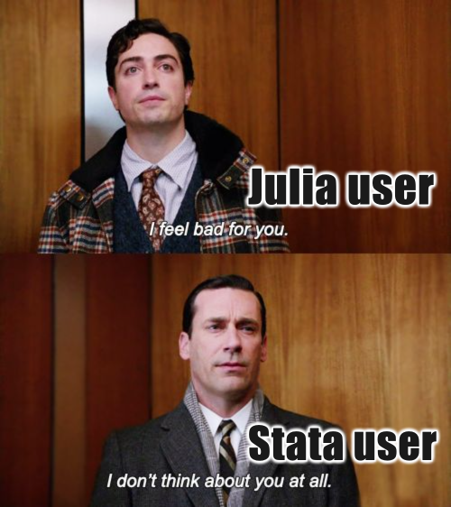
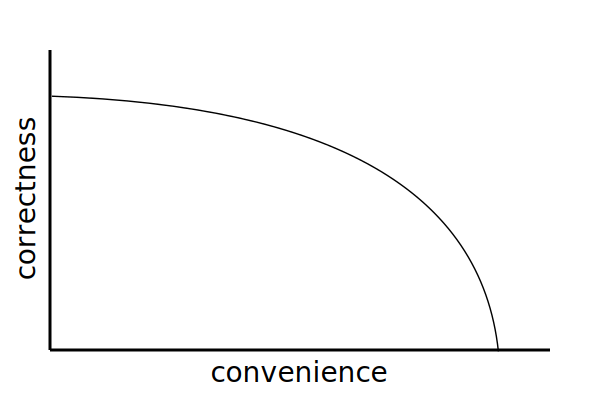

Kezdi.jl: Bridging Stata and Julia for economists
Miklós Koren
JuliaCon 2024
Who am I?
| Job | Place |
|---|---|
| Economist | ceu.edu |
| Data editor | restud.com |
| Software Developer | thnk.ng |
| Language | Since |
|---|---|
| Stata | 1997 |
| Python | 2003 |
| Julia | 2015 |
What do economists do?
Evidence from 357 replication packages
They don’t use Julia
They use multiple languages
What is Stata?
What commands do economists use?
Tradeoffs in user interface design


What do users want?
- convenience
- correctness
The Production Possibilities Frontier

- Rust: static typing, memory safe
- ChatGPT: convenient, may or may not be correct
Good example: row-level if
Bad example: implicit variable abbreviation:
Features of Kezdi.jl
Command syntax is ≈exactly like in Stata
Notes
- Commands are macros
- Variable names refer to column names in the default DataFrame
- Function calls are vectorized automatically
- Options are given with
, option
Every command can operate on a subset of rows
@keep @if !ismissing(distance)
@replace distance = 5 @if distance < 5
@regress log_trade log_distance @if exporter_country != importer_country, robustNotes
Handling missing values
Given a DataFrame
can you guess the output of